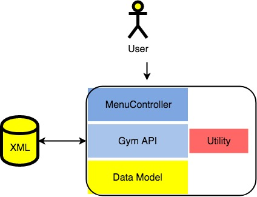
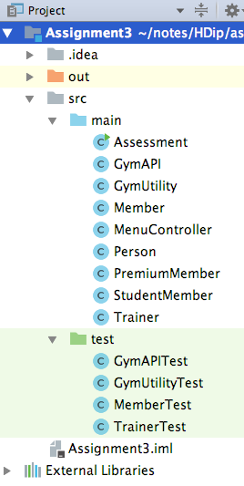
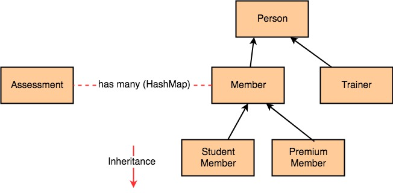

You are required to implement a console-based Gym Management application. The application's architecture is illustrated below.

The components of the architecture are:
| Component | Description |
|---|---|
| MenuController | This class provides a console-based user interface to the application's feature set. |
| Gym API | This class implements the application's 'business logic'. |
| Utility | Reusable parts of the 'business logic' are delegated to this class. |
| Data model | This contains classes based on the problem domain, e.g. Member, Trainer |
The detail specification for each aspect of this architecture are provided in the sections that follow (a tab for each).
This assignment is worth 55% of your overall grade.
Download this archive and unzip it.
Assignment3The base folder, Assignment3 is an IntelliJ skeleton project. Open it inside your IntelliJ environment.

src/mainYou are required to develop the application code in the classes of the src/main folder. Some classes already contain initial code to help you get started - although this code is incomplete.
src/testUnit test code is stored in the src/test folder, which will be provided incrementally (via Slack) over the duration of the assignment.
You shouldn't modify the tests, modify your code to meet the tests. In correcting your assignment we will replace whatever is in your test folder with the published tests.
The app's data model consists of the following entities:
Clearly the two member types will have common fields and methods (see below). Applying an inheritance design to their implementation will be rewarded with additional marks - see grading spectrum. Inheritance also applies between Trainer and Member (a Person type) which must be implemented. A visual representation of the data model is shown below:

The design detail for the classes are as follows:
Fields : email, name, address and gender.
The email is used to uniquely identify a person in the system.
Subclass of Person.
Fields: person’s height, starting weight, chosenPackage and a hashmap to record all the member's progress i.e. assessments performed by trainers.
The map key will be the date (as a string) the assessment was performed, in the format YY/MM/DD, e.g. 18/05/04 (required for sorting - see later).
The map values will be an assessment's details - see Assessment object later.
Subclass of Member. Stores no additional data.
Subclass of Member. Stores studentId and collegeName.
Subclass of Person. Stores the trainer’s specialty.
The following rules should be applied to these entities:
The following validation rules apply to these fields (fields not listed below indicates that no validation is done on them):
Height is measured in metres and must be between 1 and 3 inclusive.
Starting Weight is measured in kgs and must be between 35 and 250.
The name is maximum 30 characters; any name entered should be truncated to 30 characters.
The gender can be either “M” or “F”. If it is not either of these then apply a default value of “Unspecified”.
Each class should define a constructor that initialises each instance fields based on user input data.
Each class should define accessors and mutators for all instance fields, except for the following cases:
The Person class should have a
String toString()method that formats the printing of the object state and returns it. Its subclasses should override the superclass method String toString(), call the superclass toString method and also report on the new fields defined in these subclasses.
public Assessment latestAssessment()Returns the latest assessment based on last entry (by calendar date).
public SortedSet<String> sortedAssessmentDates()Returns the assessments dates (as strings) sorted in date order.
public abstract void chosenPackage(String chosenPackage);The concrete implementation of this method will be completed in Member subclasses.
public void chosenPackage(String packageChoice)Provides the concrete implementation for this method. The chosenPackage is set to the value passed as a parameter. There is no validation on the entered data.
public void chosenPackage(String packageChoice)Provides the concrete implementation for this method. The chosenPackage is set to the package associated with their collegeName. If there is no package associated with their college, default to “Package 3”.
The last model class is Assessment. It stores weight, thigh, waist, comment and a Trainer that entered the member’s assessment (i.e. personal trainer). This class just has the standard constructor, accessor and mutator method with no validation on any fields.
This class operates between the model classes and the menu driver class (see later). It stores:
It contains the following, self-explanatory methods:
public void addMember (Member member)
public void addTrainer (Trainer trainer)
public int numberOfMembers ()
public int numberOfTrainers ()
public ArrayList<Member> getMembers ()
public ArrayList<Trainer> getTrainers ()The class also contains these methods:
public boolean isValidMemberIndex (int index)Returns a boolean indicating if the index passed as a parameter is a valid index for the member’s array list.
public boolean isValidTrainerIndex (int index)ditto for trainers array list.
public Member searchMembersByEmail (String emailEntered)Returns the member object that matches the email entered. If no member matches, return null.
public ArrayList<String> searchMembersByName (String nameEntered)Returns a list of member names that partially or entirely matches the entered name. An empty array is returned when their are no matches.
public Trainer searchTrainersByEmail (String emailEntered)Returns the trainer object that matches the email entered. If no trainer matches, return null.
public ArrayList<Member> listMembers ()Returns a list containing all the members in the gym. Returns an empty list if none are found.
public ArrayList<Member> listMembersWithIdealWeight ()Returns a list containing all the members details in the gym whose latest assessment weight is an ideal weight (based on the devine formula). Returns an empty list if none are found.
public ArrayList<Member> listMembersBySpecificBMICategory (String category)Returns a string containing all the members details in the gym whose BMI category(based on the latest assessment weight) partially or entirely matches the entered category. Returns an empty list if none are found.
public String listMemberDetailsImperialAndMetric ()List, for each member, their latest assessment weight and their height both imperially and metrically. The format of the output is like so:
Joe Soap: xx kg (xxx lbs) x.x metres (xx inches). Joan Soap: xx kg (xxx lbs) x.x metres (xx inches).
If there are no members in the gym, the message "No registered members" should be returned.
public void store () throws ExceptionPush the members and trainers array lists out to the associated XML file.
public void load () throws ExceptionPull the members and trainers array lists from the associated XML file.
A utility class (or helper class) is a "structure" that has only static methods and encapsulates no state (fields). Typically the functionality of the methods is reusable across a range of applications. (maybe you can write code here that is common with your Web Design Assignment?)
For the Gym management application we can define an Analytics class that would hold the following methods:
public static double calculateBMI(Member member, Assessment assessment)Returns the BMI for the member based on the calculation:
public static String determineBMICategory(double bmiValue)Returns the category the BMI belongs to, based on the following values:
public static boolean isIdealBodyWeight(Member member, Assessment assessment)Returns a boolean to indicate if the member has an ideal body weight based on the Devine formula:
The menu driver class (MenuController) uses the console I/O to interact with the user. It should create an instance of the GymApi class and allow the user to navigate (a subset of) the system's features through a series of menus. The following processing is required in this menu system:
Once logged in, display a the appropriate menu (trainer or member) for the member.
On app exit, automatically save the gym data (trainers and members) to an XML file.
Aside from the above requirements, the design of the menu system and the contents you include is left open to you. The qualities to aim at include user-friendliness (e.g. report progress) and robustness (e.g. validation, formatted output).
The following packages can be hard coded in this class into a HashMap:
("Package 1", "Allowed access anytime to gym.\nFree access to all classes.\nAccess to all changing areas including deluxe changing rooms.");
("Package 2", "Allowed access anytime to gym.\n€3 fee for all classes.\nAccess to all changing areas including deluxe changing rooms.");
("Package 3", "Allowed access to gym at off-peak times.
\n€5 fee for all classes. \nNo access to deluxe changing rooms.");
("WIT", "Allowed access to gym during term time.
\n€4 fee for all classes. \nNo access to deluxe changing rooms.");Ideally, this data would be read in from a file, however, we can just hard-code them for the purposes of this assignment.
The options on the progress sub-menu should ideally display the member’s progress based on the metric chosen (e.g. weight). It should display the metric sorted by date and some form of indication as to whether the subsequent measurement was above or below the previous measurement.
As noted earlier, the menu controller exercises only a portion of the API's feature set. For this reason, a full suite of unit test will be provided to prove the entire API and utility classes. You are not required to edit or indeed understand the test code as it was not part of the curriculum. You are simply required to run the tests and fix any logic errors it reports in your code - as illustrated in the lab exercise earlier. The test execution output is presented in a 'GIVEN-WHEN-THEN' fashion and will identify the specific class method with the bug as well as the conditions that produced it.
The starter pack provided in the first section of this specification has the test required for the Pass mark level in the grading spectrum. Only the GymAPITest and MemberTest files are relevant for this level.
Tests for the higher grades are available here:
You should start with the pass level and when working, archive your code. Make a copy and then try the next level of tests by replacing the test folder with the next mark level of tests.
You will need to engage through the prog-assignments Slack channel for this assignment. Tests may need to be modified (that's the nature of software development)
The above should be used as a guide
The submission is due Sunday, 19th May 2019, 11.55PM.
A 15% penalty per day WILL be applied there after (unless mitigating circumstances, with supporting documentation, is supplied). Feedback will also be delayed on late submissions.
We have built in as much time as possible for you up front to complete the assignment. The submisstion date will not go beyond this date.
FY: there is just a matter of days to correct, interview and submit marks for the final exam board. Handup whatever you have by the deadline please.
The dropbox is available in the 'Assignments' section in Moodle.
You received a skeleton IntelliJ project folder at the start of this assignment and developed your code inside it. Create an archive of this folder and simply name it Assignment3,zip (or .rar etc). Submit this archive.
Your files should be contained in a folder named according to the rule:
You should include a README text file in the project's base folder. The contents of which should be as follows:
Name :
Student Number :
Which level unit tests succeed completely
Which level unit tests succeed partially
Self reflection - Grading Spectrum Level
A statement of how much of the application specification you implemented.
Any extra features you wish to bring to the assessors attention, i.e. extra functionality, Java syntax not covered in the lectures, non-standard Libraries used
Known bugs/problems :
Any sources referred to during the development of the assignment (no need to reference lecture/lab materials):
Video Interview over a Slack call with remote desktop. You will be quizzed about your submission
Requirements:
You will need to have the Slack client installed on your laptop/desktop and have a good internet connection, mic, webcam and sound enabled.
Duration:
15 mins approx
Starting in the days after submission
Timeslots will be made available through a Moodle choice activity closer to the time.
You will book a slot.
You will be called on Slack at that time slot
To prevent against plagiarism, ensure the entegrity of the programme and your future qualification